pm10:39
http://v.youku.com/v_show/id_XMjk1MTEzMzEy.html
刚看了20分钟，本是放在三体相关那篇里的，但发觉太好了，单拿出来
5.12am10:57
梁文道在《开卷八分钟》里称科幻小说是通俗文学，实在难以苟同，，看看百度三体贴吧里吧民的科学素养，你没法不认为科幻起码近期内是通俗不起来的
pm12:09 这么说，如果科普算文学的话，那么科普是通俗文学，但科幻不是
pm12:39
http://www.tudou.com/programs/view/QiKELlYLJvE/
磁铁们给大刘的生日礼物，，太他妈有爱了，，最后那个“生日快乐”，大刘你湿了没
说个同学父母的。他父母刚开始恋爱。有天去逛街，他妈看上一件羽绒服，但是一看价钱就拉他爸走。他爸说：咱买不起还不能试试？ 他爸就硬把他妈塞进换衣间。他妈换出来，他爸东看看西瞅瞅，拉着他妈就跑，说：快跑！趁营业员不在！他妈穿着那件羽绒服，标签飘在外面，被他爸拖着向外飞奔，刚好路过一个柱子，他妈一把抱着柱子大哭。 他爸回过头严肃的说：快跑！你是不是等着被抓啊？他妈哭得更凶了。 然后他爸大笑起来：哈哈哈哈……衣服钱你进去的时候我都付过了。
同学空间里见的，想说，真浪漫
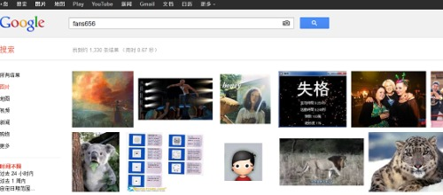
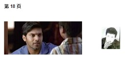haha,居然这都能找到
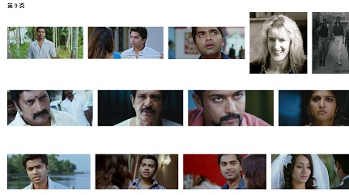不过纳闷的是哪儿来这么多印度阿三~~
有剧透，观者自重
三体3——开篇不久就抛出的这个命题：“大自然真是自然的吗？”
单薄的一句话是传达不了多大意思的，让大刘带我们走一遭吧
pm5:01
狗血不可免，不过可以自慰：大刘只是太钟情于给我们讲那个宏大的世界，手法如何已经不在乎了
pm6:05
程圣母，以及哈哈，大刘本质上的大男子主义情节，，如果三体3看完你怨气深重急需吐槽的话（针对情节，因为很难想象有谁在大刘的想象力下不被掀翻的），此为通道：
pm6:28
NM...还真提到“圣母”这俩字儿了，，不过还提到这个词：“母性”，狼王当时看有没啥想法？
pm9:09
能把水滴拉下神坛的是什么样的力量？——很不幸，只是人家用完的边角料而已，只是像故事开篇那个偶然飘进地球空间的碎片而已，，人类呵
pm9:37
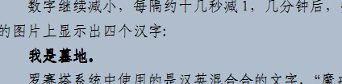
对不起，这是三体所有三部中最大信息量的一句话
pm9:58
“安逸的美梦彻底破灭，黑暗森林理论得到了最后的证实，三体世界被摧毁了。”
刨去三体1尾部及之后对三体文明的单薄描写，真的还是对这个伟大的文明有感情的
面对这个母星世界已经毁灭的文明。。。
想起《家园》里的本图西，，《灾难》里那双被囚禁的眼睛
这不是正规的星际战争 . 只是顺手消除可能的威胁。
关于正规的星际战争，短篇科幻有一个《猎户座星云》，曾经提到过，有兴趣的往回翻翻吧
有可能向宇宙发布避免黑暗森林打击的安全声明
你是否知道这有多么惨烈
5.11pm12:43
太空城没法不让人想到克拉克的《与拉玛相会》，虽然后者在如今这时代的眼光下已经没啥惊艳了
pm1:25
失去人性，失去很多；失去兽性，失去一切
程圣母的狗血让这句话失去了很大部分的效果，但这句话本身还是很有分量的
pm1:46
呃，其实呢，三体3中对高级文明的直接描写好像也就歌者这一处，，哎，无可说的“天子”的怨念啊~~~~~~~~（The Children of the Sky）
pm3:49
这么说吧，其实呢，爱啊、母性啊、善良啊本来是不错的东西，但让她们在一个她们完全无力作用的世界中作主导，简直让人吃苍蝇般难受
pm5:32
一百五十七万种语言中出现地球语，，是很浪漫，也很爱国主义，，但还是不爽~~~三体都能接受，，在宇宙这么大的图景上留人类的荣耀，过了——除非你把人类再闪耀点
pm7:44
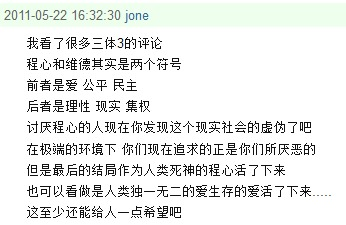
此评给已经快笑到不能自已的我浇了盆大大的冷水，，没错，我们价值观里追求的东西，最好再认真审视审视
pm7:55
多说两句吧，（虽然本来不爱八卦这种人物好恶的）
三体整个三部中的人物，能喜欢的仔细想想不多，大刘写人确实不给力，
但硬要挑，章北海，，大史、维德都还行，，对了，女性，2和3里用douban的话说天雷滚滚雷得都“二维化”了，但1里的叶文洁绝对飚得不低——有冲拉芙娜级别范纽文之下的水准
没错，想起谁？安妮，，
文奇爷爷您欠我们真正的深渊3啊~~~~~~~~~~~~
ps：有怨气的同学们呐，你们一定要去douban
再mark个这个：http://www.tianya.cn/publicforum/content/funinfo/1/2469384.shtml
pm9:09
云天明还是由大刘客串的好，反正前台戏也不多，正如三体X所说，个人感觉最相符
嘿，三体如果真拍成电影，我绝对向院线贡献初夜~~~哈哈
羡慕了个嫉妒了个恨~~
pm9:43
插。。。贴吧的素质果然是拿不出手
三体贴吧里随便逛了会儿真是。。。。好吧科幻是小众受众，我认了
pm10:18
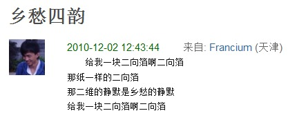
哈哈哈，还是douban欢乐
有剧透，观者自重
三体2——“我们都是虫子”，人类说，包括三体文明，，实在很妙的想法
此度看时对狗血的面壁之类情节有了新的乐趣，一则好像期望值够低，二则在对科学了解更深入了以后（原谅我大言不惭地这么说），虚无主义或叫“相对绝对的相对主义”(囧)让自己对匪夷所思的事物有了更大的宽容度
pm8:29
思维的乐趣。。。许久来又一次感受到了，真奇妙（前一篇里麦克斯韦精灵兄的评论也是个引子） 多少年前的事了？难以描述这种感觉，但真心希望也能有他人欣赏到
pm20:45
听丁仪和章北海讨论还未实现的太空舰队（工质与非工质云云），想到之后人类舰队与水滴的对决中毫无悬念的溃败。。。唏嘘万千啊
2012.5.10am9:16
雷迪亚兹的“恐日症”，，也很迷人的东西，恒星，生命之源，在特定情境下又会变成最恐怖的魔鬼，，除了科幻还有什么样的文学能给人这样的图景？
am9:34
下部开篇提到到军舰再度让人想起家园（homeworld），真心。。。哎，如果还能有有兴趣的人，推荐吧
pm12:49
人类对太空舰队的盲目自信，“阳光计划”，甚至让人感到人类的可怜，
“退一万步说，即使即将到来的谈判破裂，战争继续下去，人类仍将是最后的胜利者，联合舰队在太空中的出现，使公众对人类的力量有了一个形象的认识。现在，地球文明已经拥有了坦然面对各种敌人的自信。”
最后一句话简直让后知后觉的我们感到荒唐可笑——同志们，你们2000艘千万吨级的飞船连水滴都干不过啊，，“给我一片二向箔，清理用”
pm1:31
三体2中居然还提到了《心慌方》~~哈哈
pm1:37
“这五艘飞船必须承担起延续文明的责任，能做的只有向前飞，向远飞，飞船将是他们永远的家园，太空将是他们最后的归宿。这五千五百人就像刚刚割断脐带的婴儿，被残酷地抛向宇宙的深渊”
想起什么没？——《深渊上的火》，阿丽亚娜
pm1:51
“两天后，“终极规律”号的舰长自杀了。当时，他只身站在舰尾的平台上，平台在一个透明球形罩内，使得这里像暴露在太空中一样”
想起《Sunshine》
pm1:56
“星舰地球的所有燃料，基本上够两艘飞船的”
比阿丽亚娜更黑暗更恐怖的一副图景，还记得TDK中的那两艘船么？狼王你当时吐槽导演在这里的粗糙，但最重要的只是提出的那个问题，诺兰手软，给大众一个美好幻想，，大刘不，他让“终极规律”号舰长自杀，让所有人真实地、直面这个问题
pm2:34
大刘仅靠猜疑链支撑黑暗森林的图景如今看来有些单薄，（地球上猜疑链的消解建立在短距离的基础上），，自己曾经的一个想法是用进化论——不管初始状态如何，最终达到到平衡只会是黑暗森林的图景，，但某时也感觉到了“距离”是一个关键的因素，原因想不起来了（或根本就没找到过）。。。所以现在还是保留意见
pm2:47
看逻辑跟史强讨论黑暗森林时，有写个模拟程序的想法，但发现大刘（乃至我自己的臆想）给出的公理不够严谨，还无法建立一个良好定义的数学模型，，所以，先放着吧
pm3:19
“我只是想和您讨论一种可能：也许爱的萌芽在宇宙的其他地方也存在，我们应该到处鼓励她的萌发和成长。”
这还是太一厢情愿的浪漫了，，《深渊上的火》中飞跃界那种图景也许才算个靠谱的存在
三体1中大史的话：“我只想请二位想一个问题：是地球人与三体人的技术水平差距大呢，还是蝗虫与咱们人的技术水平差距大？”
给个不同解释：这两种差距并非2-1和3-2的差距，认清这个概念，，数学的减法将减数与被减数的信息抹掉了，但文明间的差距能否同样这样简单地类比，是个未知的问题，，甚至更基本的一点，文明间的差距能不能比较都是问题，甚至“差距”是否是个良好定义的结构？
《Trigonometric Delights》里讲到这么一故事，19世纪英国科学家在对印度大陆的地质勘探中发觉喜马拉雅山脉附近有重力异常现象：铅垂线会被喜马拉雅山脉的巨大质量偏移，，这种重力异常有个名字mascon（mass concentration）——wiki里提到月球上的这种重力异常甚至会影响环月卫星的轨道
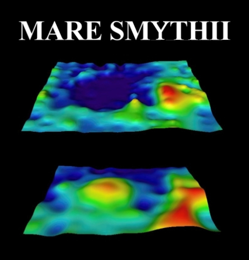
月球陨石坑Mare Smythii，上部是地形图，下部是重力图，可以看到盆地区域明显的重力异常
法国数学家De Moivre一则小故事：
When he grew old he became lethargic and needed longer sleeping hours. According to one account, he declared that beginning on a certain day he would need twenty more minutes of sleep on each subsequent day. On the seventy-third day-- November 27, 1754-- when the additional sleeping time accumulated to 24 hours, he died; the official cause was recorded as "somnolence" (sleepiness).
“年老之后他需要越来越多的睡眠时间。根据某种说法，他声称某天开始他接下来的每天需要额外的20分钟睡眠。第73天——1754年11月27日——当额外所需的睡眠时间累积到24小时，他死了；官方记录死因为‘嗜睡症’”囧.....
很浪漫呃
新星(nova、supernova)其实不该叫新星，因为它们其实是死星(dying star)的回光返照~~
西西弗斯，小图挺好看
qq空间里看到一篇转的文章，根据图灵和苹果标志那段，确信有水分，，不过只要不是纯水，对于我们这个闭不视物的国家，对有点自己鉴别能力的人来说，就可以看
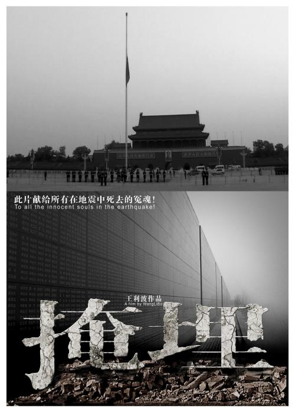
文中提到这部纪录片，辗转找到了下载 （可能要翻墙）（豆瓣、维基、和天涯的一篇帖子）
看完有曾经读《动物解放》时心绞痛的感觉，，无可说，5星给到感兴趣的自己去看
不禁也就回想起曾经看过的关于可可西里藏羚羊的纪录片《平衡》，多年后同样补上5星
以下是轻松一些的：
关于地震，王晋康有一个短篇科幻小说《临界》，，
（无关的还有篇刘慈欣的《地火》，印象中也不错）
同样跟科学观测有关的一个电影《龙卷风》，给了4星纯是个人倾向——跟给《太阳浩劫》的4星差不多性质，，闲的话也可以看看
之前提到的《地球故事》系列也不错，同样闲的话去看
最后是俩吐槽：
《掩埋》<->《唐山大地震》
《平衡》<->《可可西里》
补：尝试传《掩埋》到youku遭屏蔽
此篇完全草稿，发出来只是征求下可能的意见
（。。。NMBD，dd连<sup>标签都不让用么？那你放个HTML的编辑模式给鬼子看啊）
想Java的“一次编译，到处运行”1的哲学应该是正确的2，就像unicode的code point，比之到编程中来，就是给定一套统一的抽象指令集，具体硬件怎么实现是它们的事。
;三言两语解释下code point？(咋翻译这词。。。)
;gb2312推崇者、utf8的“目光短浅”
恩，抽象，，lisp中简洁至极的语法加上抽象展现了无穷的威力，
;sicp中从(+ n n)到newton method的简要介绍
抽象的力量在于把离散的、凌乱的事物用一种一致的(uniform)、抓取本质的语言描述出来，然后我们可以在更高层上思考、发现，再下推到新的具体情况去3
;我还是好好复习下mindhack + 再好好思考下“抽象”这一概念的表述 吧
牛顿推翻了亚里士多德对宇宙图景的“月上”“月下”的解释，代之以统一的“万有引力”的普适规律4——普适正是“抽象”这家伙具有的一条性质
;“月上”“月下”+ 多点儿例子
但也听到过“要警惕过度抽象”，抽象是否是唯一的一种。。。呢？就像科学不能解决人类所有的问题，我们现在对科学的顶礼膜拜（好吧，知道很多人不是，我说nerd行么）是不是一种见识短呢？
; “警惕过度抽象”、编程范式那几个引用 + 此段语无伦次的重新表述
我是说，也许有一天开辟出了人类心智中的一块新疆域，如此惊心，如此赞叹，就像古希腊哲人们采取演绎方法而奠定一切科学基础的。。。，星孩？
; 你个大舌头。。。再写
1 "compile once, run everywhere"——相对于qt的"code once, compile everywhere"——相对相对于汇编的"code everywhere, oops"
2尽管似乎实践上效果不是那么理想——听过Java者们的自嘲："compile once, debug everywhere"
3mindhack里有关表述比我这二把手清晰得多
; 鸟语翻译 + citation
早前的一次跟狼王的聊天中讨论到战争对文明演化的正面影响，就文化方面我所知道的而言：亚历山大的马其顿帝国——遍布各地的亚历山大城、亚历山大图书馆，，秦始皇统一中国后的“器械一量，同书文字”
最近看的一个BBC系列纪录片《地球故事》展示了另一侧面：(这里或这里，在线视频)
1、“在冷战期间，潜艇战变得非常重要... 核潜艇必须能在各大洋中安全航行，所以潜艇军官必须确知海床的深度。在海军的资助下，科学家着手绘制前所未见的详细海底地图... 我们现在使用的精确深度记录，基本上是二战末期做出来的测量...”
——《地球故事2：深海》
2、“在60年代初期，苏联跟西方国家同意部分限制核试验，空中与水中核试验都遭到禁止...‘但苏联拒绝检视小组进入境内，因此无法预防地下核试验’... 因此美国决定通过建设全球地震仪网络来监视苏联... 这套网络能侦测到地下核爆，但同时也让科学家拥有第一手全球地震图”
——《地球故事5：世界屋脊》
也许你会说战争对文明的推动只是一种巧合，因为有更为理性的方式推动文明发展。没错，但我们聊的不是理想，而是现实(历史?)，，现实有现实的方法论，
另外，虽然我们视战争为邪恶（这都不一定呢，“反侵略战争是正义的战争”...），但请注意“邪恶”经常只是道德考虑的判断，而道德，是一个物种借以存活演化的行为模式，
举例来说：乱伦禁忌，，近亲繁殖会使携带疾病的隐性基因更容易表达，于是乱伦行为受到了自然选择的抑制（自然选择的整个机制是另一个迷人的故事），，步入文明以来的人类不再受原始自然选择的制约，但将部落、城邦等社会形态视为个体时，进化论仍然主宰着人类文明的发展。而我以为，道德就是（当视为个体时的）社会形态的本能。
要写一篇完整的讨论挺困难的，所以先就放一脚手架和些材料在这吧
Qt看了两章，，扫了全部(图片...)，
恩，很强大，——可以想见的将来自己需要的toolkit全在这里了
bravo
2012.5.3am9:43
上面的"bravo"如今看来很汗颜... 虽然没那么赞同大多人所云“学习曲线太陡”，但也确实觉得这本Qt入门略高屋建瓴了，，douban爬了爬找到这本 (出处)
承认有狗熊掰玉米之嫌，且就让我试试吧先
2012.5.5am10:51
youtube上一个qt教程里说，“很多人甚至质疑买书的必要性，因为IDE中已经包含了完整的教程...”("The helps is actually very very good. A lot of people even question buying a book, because you have full tutorials, full everthing right here in the IDE. It's a very robust system")
加上爬QObject页面时看到的一个时钟的例子，印象深刻
难道又要掰玉米了？
PS：在文章里掺英文的行为很纠结，，因为看别人的blog时看到能用中文而现鸟语也很不爽，但同时有些东西直接看英文又更舒服，，尽量能翻译的翻译过来，但附上原文，权当练英语吧
2012.5.5pm10:58
qt的帮助其实算不得“教程”... 所以还是看书，不过配合爬在线文档，，
似乎几次想看快先图一遍感性认识的尝试都不成功——太快完全无用，不那么快又觉得丧失“快”的价值，最终还是老老实实爬，保证不了效率起码保证质量
sicp窥到一版序，隐约有觉得自己选择程序作为某种。。。事业？。。是种无比正确的选择
2012.4.30 am8:45
mark两篇文章，分别是g9和刘未鹏的：
am11:56
jesus... lisp真是丫一神奇的东西：
Quick: An Introduction to Racket with Pictures
am12:16
大开眼界，，受精了...
pm3:06
pm8:40
sicp看到现在，已经有拜神的感觉了。。。饿了个娘D
假想的暑假可以去做(学)的事情：
操作系统
网页(html、css云云)
2012.4.27 pm6:44
在想暑假真可以学网页去——一个比如类似于此的效果：
是想做个自己的dd的模板，重点在于实现一些想法、学点技术，美学以及云云
并没真确信自己需要这个，但去做的可能性也不坏么
《无耻混蛋》看得甚是过瘾，狼王要不要来篇影评？
http://www.xyjy.cn/xhdt/ShowArticle.asp?ArticleID=5970
http://ishare.iask.sina.com.cn/f/5099817.html
前一个链接的价值不保证，
后一个链接。。呃。。其价值对特定的人不保证
NFA与DFA的等价性，尚不知怎么证明，不过想到其中一部分：
由NFA构造DFA的过程用到状态集，而NFA的状态集是有限的，比如n，那么它的幂集为2^n，其中DFA会用到的至多2^n-1——于是起码不必担心构造出无穷的DFA状态了
这种东西放blog可能不合适，好吧之前也说过，我已经把blog形式上当mnote在用了
http://www.joelonsoftware.com/articles/Unicode.html
好像早前没看完的一本《软件随想录》就是这家伙写的，恩。。文采飞扬我想说(对于堪堪能看懂鸟语的我..)
http://www.cl.cam.ac.uk/~mgk25/unicode.html
UTF-8，，讲的比较细，也许以后做编码详看——或者奔去Unicode站
其实我个人来说没任何好纠结的，你用c、c++，单值返回就是游戏规则，，想用多值(真的有必要用的话)，自己写个语言去 (真有这愿景呢)
http://en.wikipedia.org/wiki/Autism
自闭症...听起来很迷人又很悲伤的名词，，爸曾说自闭症其实就是“憨憨”，只是人们不喜欢那么说
不知道，所以爬会儿wiki，，想起来那还搁着的心理学导论公开课，
这么多要弄的东西，，还好还年轻
Daubdles提到香水才想起来，“看过的电影”页面里加了个douban链接，主要求的是按评价排序的功能 (狼王你那既然整理了也可以弄下)
PS：是不是该叫twiispa...
mnote要做的不是提供给用户一个存放、组织信息的平台(或者说不只是?)，
它是一个容器(黑匣子)，你可以丢给它任何东西(信息)，不必太过在意组织，之后你可以向它索要信息(甚至以一种组织的形式？)，，这是一对一的形态
更进步的会是mnote管理信息池(一个所有用户信息碎片构成的池塘)，具备一种自组织的机制(优化、整合信息等等)，，当然这是近于科幻的形态了
狼王见了斟酌下，这段是不是要公开放这。。
音乐页面不大记录，删了，留个保存在这：
Katie Herzi[Apple Tree] (2012.3.3-4)
Yeah Yeah Yeahs [Show Your Bones]
左小祖咒
Love Psychedelico [Early Times]
Most Valuable:
Pixies
Nirvana
Joy Division
窦唯
张悬
大二：
Mono
大学初：
Mogwai
甜梅号
谢天笑与冷血动物
The Cranberries
Dolores O'Riordan
The Cure
Massive Attack [Mezzanine]
范晓萱 [还有别的办法吗]
CSS [Cansei de Ser Sexy]
Keren Ann
Lady Gaga
Moumoon [Sunshine Girl]
Lenka
Taylor Monsen [Light Me Up]
Chara [Montage]
补班：
窦唯 (以及黑豹、魔岩三杰)
张悬
SMX：
Arctic Monkeys
Joy Division
The Doors
Nirvana
Pixies
Oasis
无有地：
Beatles
James Blunt
盐化：
陶喆
地质期：
王蓉
爱戴
金莎
麦当娜
迈克尔杰克逊
史前：
周杰伦
梁静茹
孙燕姿
周传雄
光良
潘玮柏
王力宏
让雅尔 [真空环绕声]
nice
一个相对真实的食物链(生态系统)会是C++的很好的练习，，恩。。暂且这么认为，以后试试
我靠。。。douban你是要把我们往死里逼啊
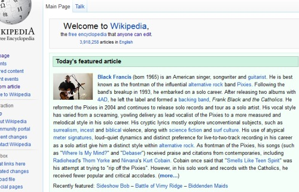
wow...~~~
当在计算机领域的折腾终于可以暂缓的某个午后，恩。。。我要去看这个：
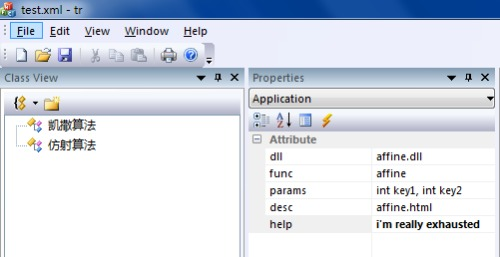
团队的任务，，蛋啊，疼死我算了
我只是觉得这几句话很帅——呃，基本确信不解释的话看不懂，，不过你们可以放心地相信无所谓~~
“当我们对待一个人或一种文化时，我们对待的是一个过程”
——《通向量子引力的三条途径》
我靠。。。dd的那个一岁视频也太恶了。。。。
mark个这个，第一次做出来时相当那个激动——恩，草纸上折腾矩阵三角函数七八页开外了已经
。。。NM，115整顿，，好吧截个图算了：
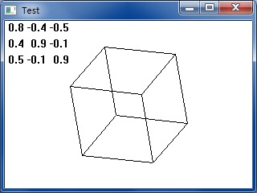